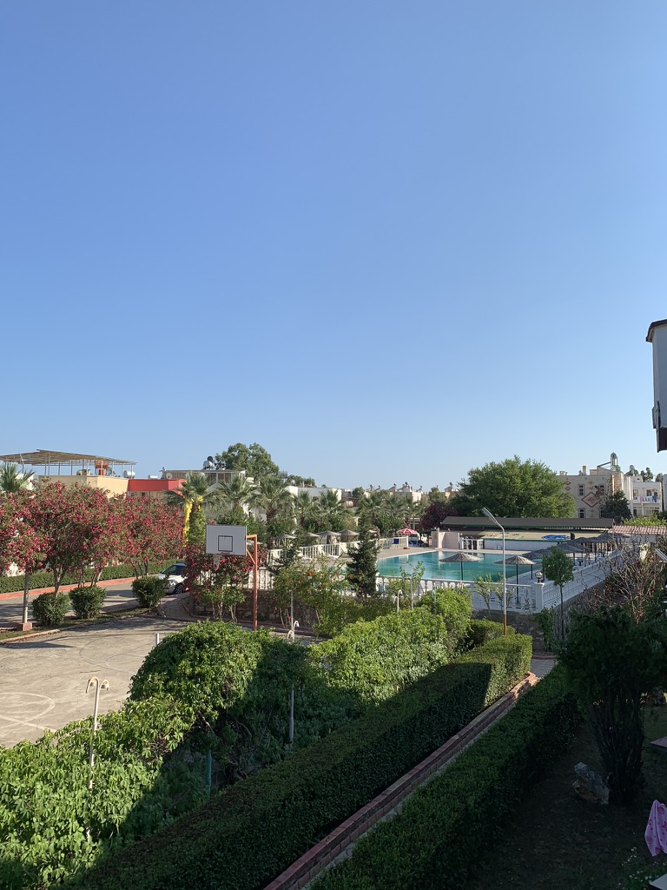
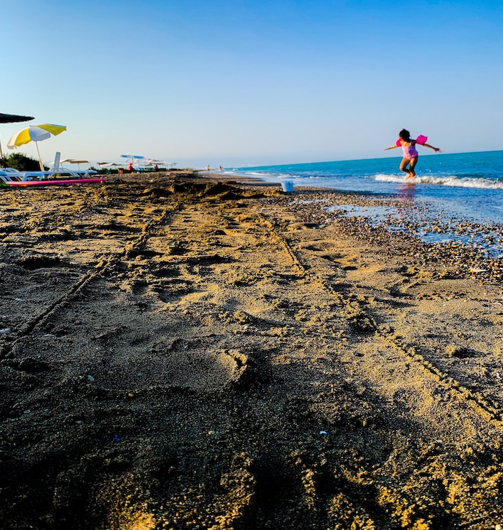

Tatil köyümüz, 25 dönüm arazi üzerinde kurulmuş olup 44 dubleks daire, 32 apart daire, 12 adet standart oda , 6 adet ahşap oda ve 6 adet suit odadan oluşmaktadır.Toplam yatak kapasitemiz 300 kişiliktir. 25 dönüm arazinin 7 dönümü binalardan diğer alanlar ise tamamen yeşillendirilmiş ve ağaçlandırılmıştır.Adana havalimanına 150 Km, Mersin’e 75 km, Silifke ve Kızkalesi’ne 20 km uzaklıkta olup Silifke’ye bağlı Arkum Mahallesindedir.
Tesisimiz ülkemizde doğal koruma altına alınmış bölgelerden Göksu Deltası alanı içerisindedir.Göksu Deltası içinde kuş cenneti (göçmen kuşların konakladığı alan), nesli tükenmekte olan bitki türleri ve caretta carettaların üreme alanları vardır.Bundan dolayı bu bölgede yapılaşma denize 300 ila 700 metre mesafede imarlandırılmıştır.
Tesisimiz çevresinde yapılaşma çok seyrek ve birbirinden uzaktır.Bundan dolayı, sessiz, sakin ve doğal örtüsü bozulmamış ender bölgelerden birinin tam ortasındayız.Hizmet verdiğimiz 18 yılda, sessizliği ve sakinliği isteyen, şehir merkezinden ve kalabalıktan uzak, çocuklu ailelerin rahat edebileceği ve güvenli bir bölgede misafirlerimize hizmet ediyoruz.
Deniz ve kumsalımız, Atakent (Susanoğlu) ve Taşucu arasındaki 26 km’lik kumsal şeridinin tam ortasındadır.Bu mesafede bulunan sahil tamamen ince kumdur ve 50 ila 80 metre genişliğe sahiptir. İnsan boyunu aşmadan denizin içerisine doğru yaklaşık 50 metre yürüyebiliyorsunuz.
Mükemmel bir sahile, ince kuma ve denize sahibiz. Tesisimiz denize yakınlık olarak ilk imarlı parsel olup denize uzaklığı 500 metredir. Bu mesafe üzerine denize kolay ulaşım için etrafı ağaçlandırılmış yolu mevcuttur. Etrafımızda az sayıda yazlık konut olup, sessiz sakin ve dinlendirici bir yerdir. Deniz kenarında kafeterya, soyunma ve duş kabini, kum voleybol sahası, şezlong ve şemsiyelerimiz bulunmaktadır. Ayrıca tesis bünyesinde isteğe bağlı olarak yat turu düzenlenmektedir. Tesisimizden denize yürüyerek, araçla ve bisiklet ile gidiş geliş bulunmaktadır.
Tesisimizde, yetişkinler ve çocuklar için açık havuzumuz bulunmaktadır.Açık ve kapalı restoranımızda günün her saati hizmet veriyoruz.2 adet çok amaçlı kullanıma sahip salonumuz mevcuttur.Açık ve kapalı bar ve akşamları canlı müziğimizde ailece keyifli vakit geçirip eğlenebilirsiniz.
Bilardo, masa tenisi vb. oyunları oynayıp keyifli vakit geçirebileceğiniz açık ve kapalı oyun salonumuz bulunmaktadır.Basketbol sahamız, spor aletleri ve çocuk parkımızda zaman geçirip spor yapabilirsiniz.
Tesisimiz; Tarih ve kültür zengini olan Mersin ilinin içinde barındırdığı görülmesi gereken birçok değerlere yakın mesafededir.
Bunlardan bazıları Ayatekla Kilisesi, Cennet Ve Cehennem Mağaraları, Astım Mağarası, Kızkalesi, Üç Güzeller Müzesi, Uzuncaburç, Adam Kayalar, Kanlı Divane, Anfora Müzesi, Olba Antik Kenti, Mezgit Kalesi, Silifke Kalesi, Demircili Anıt Mezarı ve çok sayıda mesire alanlarından oluşmaktadır.Gezi alanları içerisinde bu önemli değerleri yakından görebilme şansı yakaladığınız gibi, Cennet- Cehennem arasında yapılan deve turlarına ve Silifke Göksu nehri üzerinde düzenlenen Rafting aktivitelerine katılarak güzel anılarla ayrılabilirsiniz.
Tarihi ve kültür güzelliklerinin yanı sıra küçük adacıkları içinde barındıran Tisan, Taşucu, Altınkum ve Atakent arasında günübirlik düzenlenen yat turlarına katılabilirsiniz.